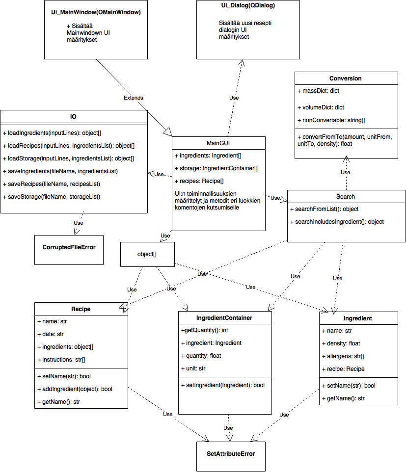

Ohjelman rakenne¶
Yleiskatsaus ja UML-kaavio¶
Ohjelman rakenne on nähtävissä alla olevasta UML-kaaviosta. Kaaviossa ei ole luokkien kaikkia metodeja tai attribuutteja, vaan muutama, jotta käy paremmin ilmi mitä niiltä odotetaan.
Käyttöliittymä on tehty PyQt kirjastoa ja QT designeria hyödyntäen. Käyttöliittymän ulkoasu on Qt designerin generoimaa koodia, jossa painikkeet ja taulut laitetaan oikeille paikoille. Pääikkunan design on luokka nimelta Ui_MainWindow, jonka ohjelman pääluokka MainGUI perii.
MainGUI luokassa määritellään mitä metodia kutsutaan, kun käyttöliittymässä esim. painetaan painiketta. Myös nämä kutsuttavat metodit ovat MainGUI luokassa ja sisältävät pääosin taulujen ja kenttien populoimista sekä niistä tietojen lukemista.
MainGUI luokassa myös säilytetään listaa kaikista raaka-aine, resepti ja varastotuote (ingredientContainer) olioista. Oikeastaan kaikki käyttöliittymään liittymättömät toiminnallisuudet toteutetaan hyödyntäen eri luokkien kuten Search ym. metodeja.
Toteutettu rakenne on hyvin toimiva, mutta muutamien metodien suhteen herää kysymys, että mihin luokkaan niiden tulisi kuulua. Esimerkiksi joitain aika yleisiä apumetodeja olisi voinut laittaa uuteen omaan luokkaan.
Yleiskuvaus luokista ja niiden tärkeimmistä metodeista on generoitu automaattisesti koodista alla olevan kuvan alapuolelle.
MainGUI¶
MainGUI luokasta on vaikea valita mitään erityisen tärkeitä metodeja, mutta kuvauksessa on selitetty mitä minkäkin niminen metodi yleensä tekee sekä jokaisesta on yksi esimerkki. Jokainen metodi on myös kommentoitu, joten halutessaan tämän dokumentin lopusta voi katsoa mitä metodeja luokka sisältää ja mitä ne tekevät.
Created on 27.4.2016
@author: Kimi Päivärinta
-
class
mainGUI.MainGUI[source] Tämä luokka perii pyqt:n QMainWindow luokan sekä QT Designerilla luodun Ui_MainWindow luokan, joka on moduulissa GUIDesign. Ui_MainWindow luokka sisältää graafisen käyttöliittymän designin.
Luokka sisältää paljon metodeja, joilla tehdään muutoksia, kun käyttöliittymällä tapahtuu muutoksia. Metodit voidaan jakaa karkeasti osiin
- Metodit:
init*: Luokan luomisen yhteydessä asetetaan nappuloiden toiminnallisuudet, ladataan tiedostoja ym. populate*: Piirretään data johonkin tauluun save*: Tallennetaan muuttunutta dataa add*: Lisätään uusi ohje/raaka-aine/ym. get*InDataListForTable: Metodit palauttavat niille annetun listan olennaisimmat tiedot “data” tyyppinä, joka voidaan antaa populateTableWith() metodille populoitavaksi
-
addNewRecipeIngredient()[source] Tämä metodi tarkastaa ja tallentaa reseptinäkymällä raaka-aine tekstikentissä olevat tekstit uudeksi raaka-aineeksi reseptille. Oikean reseptin löytymiseksi hyödynnetään self.recipeToEdit muuttujaa.
Tallennuksen jälkeen metodi populoi uudelleen reseptin raaka-ainelistaus taulun.
-
deleteRecipeIngredient()[source] Tämä metodi poistaa valitun reseptin valitun raaka-aineen.
Metodia kutsutaan painamalla poista painiketta. Oikea resepti ja raaka-aine selviää muuttujista self.recipeToEdit ja self.recipeIngredientToEdit
-
getRecipesInDataListForTable(recipeList)[source] Muodostaa annetujen reseptien tiedoista listojen listan, jotka on helppo populoida QTabletWidget tauluun.
-
initButtons()[source] Tässä metodissa määritellään käyttöliittymän painikkeiden toiminallisuudet
-
loadFromFileToList()[source] Tämä metodi päättelee kutsujan (self.sender()) perusteella mikä tiedosto tulee ladata uudelleen ja myöskin lataa sen.
Jos self.sender() on None, niin ladataan kaikki tiedostot. Muulloin kutsuja on esim. self.buttonLoadRecipes, jolloin ladataan reseptit tiedostosta.
-
populateIngredientsEditFields(mi)[source] Tämä metodi populoi raaka-ainenäkymällä olevat tekstikentät, joilla voi muokata raaka-aineen tietoja. Tätä metodia kutsutaan, kun raaka-ainelistaus taulua klikataan.
Rivin indeksi tallennetaan self.ingredientToEdit muuttujaan, jotta muutoksia tallennettaessa tiedetään mitä raaka-ainetta täytyy muokata.
- Args:
mi: mi muuttuja/olio, joka sisältää klikatun rivin ja kolumnin indeksin.
-
populateIngredientsTable()[source] Tämä metodi populoi raaka-ainelistaus tauluun kaikki tiedetyt raaka-aineet
-
saveIngredientsEdit()[source] Tämä metodi tarkistaa raaka-aineen perustietojen tekstikenttien arvot, jonka jälkeen muutokset tallennetaan raaka-aineeseen.
Oikea raaka-aine löydetään self.ingredientToEdit muuttujan avulla.
Recipe¶
Created on 19.4.2016
@author: Kimi Päivärinta
-
class
recipe.Recipe[source] Luokka reseptejä varten. Tämä luokka pitää sisällään kaikki reseptille ominaiset attribuutit sekä tarvittavat metodit niiden arvojen muuttamiseksi.
- Attributes:
self.date: Luontipäivä self.name: Reseptin nimi self.time: Reseptin tekemiseen menevä aika minuuttina (int) self.instructions: Ohjeet (str[]) self.outcomeSize: Reseptin lopputuloksen koko, esim. 4 (kg) self.outcomeUnit: Reseptin lopputuloksen yksikkö, esim (4) kg self.ingredients: Raaka-aineet (object[]) - Returns:
- Attribuuttien muuttamiseen käytettävät metodit (set* & add* & delete/remove*) palauttavat True, jos muutos onnistuu
- Raises:
- Kaikki attribuuttien asettamiseen käytettävät metodit (set* & add*) heittävät SetAttributeErrorin, jos attribuutin arvon asetus epäonnistuu.
-
addIngredientContainer(ingredientContainer)[source] Validoi, että lisättävä raaka-aine on IngredientContainer-olio sekä lisää raaka-aineen(Container) self.ingredients[] listaan
-
deleteIngredient(index)[source] Poistaa reseptiltä raaka-aineen. Argumenttina annetaan ohjeen sijainti listassa (index)
-
getAllergensDistinctGUI()[source] Palauttaa reseptien raaka-aineiden stringinä pilkulla erotettuna. Allergeeni esiintyy listassa vain kerran, vaikka se olisi monessa raaka-aineessa.
-
getIngredients()[source] Palauttaa reseptin raaka-aine oliot listana
-
getName()[source] Palauttaa reseptin nimen
-
setName(name)[source] Validoi, että nimi on yli 2 merkkiä pitkä ja asettaa sen: self.name
-
setTime(time)[source] Asettaa reseptin tekemiseen menevän ajan (min) inttinä: self.time
Ingredient¶
Created on 19.4.2016
@author: Kimi Päivärinta
-
class
ingredient.Ingredient[source] Raaka-aine luokka. Tämä luokka sisältää perustiedot raaka-aineesta, varastossa ja resepteissä olevat “raaka-aineet” sisältävät tämän olion.
- Attributes:
self.date: Luontipäivä self.name: Nimi self.density: Tiheys yksikkömuunnoksia varten (float) self.allergens: Allergeenit (str[]) self.recipe: Mahdollinen resepti (object) self.recipeLoaded: Kertoo onko raaka-aineen resepti ladattu. None = Ei reseptiä, False = Resepti on, mutta oliota ei ladattu, True = Olio ladattu - Returns:
- Attribuuttien muuttamiseen käytettävät metodit (set* & add* & delete/remove*) palauttavat True, jos muutos onnistuu
- Raises:
- Attribuuttien asettamiseen käytettävät metodit (set* & add*) heittävät SetAttributeErrori:n, jos validointi epäonnistuu
-
getAllergens()[source] Palauttaa allergeenit listana
-
getDensityGUI()[source] Palauttaa tiheyden stringinä desimaalipilkulla
-
loadRecipe(recipesList)[source] Etsii nimen perusteella reseptilistasta raaka-aineelle halutun reseptin ja asettaa olion: self.recipe
- Args:
recipesList: Lista kaikista resepteistä - Returns:
Onnistuessa: True Ei ladattavaa: None - Raises:
SetAttributeError: Reseptiä ei löytynyt
-
removeAllergens()[source] Poistaa kaikki raaka-aineen allergeenit
-
removeRecipe()[source] Asettaa self.recipe = None sekä self.recipeLoaded = None
-
setName(name)[source] Validoi, että nimi on yli 2 merkkiä pitkä ja asettaa sen self.date
-
setRecipe(recipe)[source] Raaka-aineet luetaan sisälle ennen reseptejä, joten reseptin oliota ei todennäköisesti ole vielä olemassa. Validoi, että resepti on yli kaksi merkkiä pitkä sekä asettaa halutun reseptin nimen stringinä: self.recipe sekä asettaa self.recipeLoaded = False
IngredientContainer¶
Created on 19.4.2016
@author: Kimi Päivärinta
-
class
ingredient.IngredientContainer[source] Tämä luokka sisältää viittauksen raaka-aine olioon ja tämän lisäksi omat attribuutit määrästä sekä yksiköstä. Tätä luokkaa hyödynnetään varastolistauksen sekä reseptien raaka-aineiden tallentamisessa. Samaa raaka-ainetta käytetään hyvin todennäköisesti useassa eri reseptissä, jos Ingredient luokassa olisi määrä, niin silloin tietoa joutuisi kopioimaan sekä säilyttämään moneen kertaan. Tämän luokan avulla esim. Jauhelihan tiedot ovat vain kertaalleen Ingredient oliossa ja resepteissä olevat IngredientContainer oliot sisältävät viittauksen tähän.
- Attributes:
self.ingredient: Raaka-aine olio self.quantity: Raaka-aineen määrä self.unit: Määrän yksikkö - Returns:
- :Attribuuttien muuttamiseen käytettävät metodit (set* & add* & delete/remove*) palauttavat True, jos muutos onnistuu
- Raises:
- :Attribuuttien asettamiseen käytettävät metodit (set* & add*) heittävät SetAttributeErrori:n, jos validointi epäonnistuu
-
getAllergensStr()[source] Palauttaa allergeenit stringinä pilkulla erotettuna sekä alkussa teksti “Allergeenit: “
-
getQuantityStr()[source] Palauttaa määrän stringinä, desimaalipilkulla
-
hasRecipe()[source] Palauttaa True, jos raaka-aineella on tallennettu resepti, muuten false
-
setIngredient(ingredient, ingredientsList)[source] Etsii halutun raaka-aineen annetusta raaka-ainelistasta nimen perusteella sekä asettaa sen: self.ingredient
- Attributes:
ingredient: Etsittävä raaka-aine (string) ingredientsList: Lista kaikista raaka-aineista - Returns:
Onnistuessa: True - Raises:
- :SetAttributeError epäonnistuessa
IO¶
Created on 19.4.2016
@author: Kimi Päivärinta
-
class
IO.IO[source] Input output luokka, jolla ladataan raaka-aineet, reseptit ja varastolistaus tiedostoista. Tämän lisäksi nämä voidaan tallentaa tiedostoihin annetusta listasta.
-
loadIngredients(inputLines)[source] Tämä metodi lukee raaka-aineet tiedostosta ja palauttaa ne listana.
- Args:
inputLines: tiedoston kahva (fileIO), josta tiedot luetaan. - Returns:
ingredientList: Raaka-aine oliot listana successCount: Montako luettiin onnistuneesti sisään errorCount: Montako jäi virheeseen luettaessa - Raises:
CorruptedFileError: Jos kohdataan tuntematon tiedostotyyppi
-
loadRecipes(inputLines, ingredientsList)[source] Tämä metodi lukee reseptit tiedostosta ja palauttaa ne listana.
- Args:
inputLines: tiedoston kahva (fileIO), josta tiedot luetaan. ingredientList: Tunnetut raaka-aineet listana - Returns:
recipesList: Resepti oliot listana successCount: Montako luettiin onnistuneesti sisään errorCount: Montako jäi virheeseen luettaessa - Raises:
CorruptedFileError: Jos kohdataan tuntematon tiedostotyyppi
-
loadRecipesForIngredients(ingredientsList, recipesList)[source] Tällä metodilla voidaan ladata kaikkien raaka-aineiden reseptit. Käytännössä tämä metodi kutsuu raaka-aineen loadrecipe() metodia
- Args:
ingredientList: Raaka-aine oliot listana recipesList: Reseptio oliot listana
-
loadStorage(inputLines, ingredientsList)[source] Tämä metodi lukee varastolistauksen tiedostosta ja palauttaa ne listana.
- Args:
inputLines: tiedoston kahva (fileIO), josta tiedot luetaan. ingredientList: Tunnetut raaka-aineet listana - Returns:
storageList: Raaka-aine oliot listana successCount: Montako luettiin onnistuneesti sisään errorCount: Montako jäi virheeseen luettaessa - Raises:
CorruptedFileError: Jos kohdataan tuntematon tiedostotyyppi
-
saveIngredients(fileName, ingredientsList)[source] Tämä metodi tallentaa raaka-aineet tiedostoon ohjelman luettavassa muodossa. Tiedot tallennetaan ensin temp.ing tiedostoon, jonka jälkeen kyseinen tiedosto nimetään uudelleen halutun nimiseksi.
- Args:
fileName: Tiedostonimi, johon raaka-aineet tallennetaan ingredientList: Raaka-aine oliot listana
-
saveRecipes(fileName, recipesList)[source] Tämä metodi tallentaa reseptit tiedostoon ohjelman luettavassa muodossa. Tiedot tallennetaan ensin temp.rec tiedostoon, jonka jälkeen kyseinen tiedosto nimetään uudelleen halutun nimiseksi.
- Args:
fileName: Tiedostonimi, johon reseptit tallennetaan recipesList: Resepti oliot listana
-
saveStorage(fileName, storageList)[source] Tämä metodi tallentaa varastossa olevat raaka-aineet tiedostoon ohjelman luettavassa muodossa. Tiedot tallennetaan ensin temp.sto tiedostoon, jonka jälkeen kyseinen tiedosto nimetään uudelleen halutun nimiseksi.
- Args:
fileName: Tiedostonimi, johon varaston raaka-aineet tallennetaan storageList: Varaston raaka-aine oliot listana
-
Search¶
Created on 19.4.2016
@author: Kimi Päivärinta
-
class
search.Search[source] Tämän luokan metodeilla on mahdollista tehdä erilaisia hakuja. Ohjelma hyödyntää tätä luokkaa reseptien etsimisessä tietyillä hakuehdoilla
-
searcForhRecipesNIngredientsInStorage(recipesList, N, storageList, NNotInStorage)[source] Tällä metodilla voidaan etsiä reseptejä, joihin löytyy vähintään N raaka-ainetta varastosta tai puuttuu maksimissaan N raaka-ainetta.
- Args:
recipesList: Lista kaikista reseptiolioista N: Monta raaka-ainetta löydyttävä/puututtava varastosta (int) storageList: Lista varastossa olevista raaka-aineolioista NNotInStorage: (Boolean) True arvolla N merkitsee sitä montako saa puuttua. False arvolla N merkitsee montako täytyy löytyä - Returns:
recipesFound: Lista reseptio-olioista
-
searchFromList(searchFor, searchList)[source] Tällä metodilla etsitään olio listasta tiettyä oliota sen nimen perusteella. Vertailu tapahtuu stringeinä ja vaatii, että listassa olevilla olioilla on getName() metodi.
- Args:
searchFor: Etsittävä nimi (string) searchList: Lista olioista, joilla on getName() metodi - returns:
recipesFound: Lista löydetyistä olioista. Tyhjä, jos ei löytynyt
-
searchIncludesIngredient(ingredientStr, recipesList)[source] Tällä metodilla etsitään reseptejä, jotka sisältävät tietyn raaka-aineen. Vertailutapahtuu stringeinä
- Args:
ingredientStr: Raaka-aineen nimi (string) recipesList: Lista reseptiolioista - Returns:
recipesFound: Lista reseptiolioista. Tyhjä, jos ei löytynyt
-
searchNoAllergen(allergenStr, recipesList)[source] Tämmä metodilla etsitään reseptejä, jotka eivät sisällä tiettyä allergeeniä. Allergeenien vertailu tapahtuu stringeinä
- Args:
allergenStr: Allergeeni (string) recipesList: Lista reseptiolioista - Returns:
recipesFound: Lista reseptiolioista. Tyhjä, jos ei löytynyt
-
Conversion¶
Created on 19.4.2016
@author: Kimi Päivärinta
-
class
conversion.Conversion[source] Conversion luokka sisältää kaikki ohjelman tuntemat yksiköt sekä niiden “suhdeluvut”, jotka mahdollistaa muunnokset. Tämän luokan avulla onnistuu yksikkömuunnokset.
-
convertFromTo(amount, unitFrom, unitTo, density)[source] Tekee yksikkömuunnoksen ja palauttaa muunnetun arvon. Jos ei muunnettavissa, palauttaa alkuperäisen arvon.
- Args:
amount: Muunnettava määrä (float) unitFrom: Alkuperäinen yksikkö unitTo: Haluttu yksikkö density: aineen tiheys, tarvitaan vain kun muunnetaan massa<->tilavuus (float) - Returns:
Muunnetun yksikön (float):
-
convertMassToMass(amount, unitFrom, unitTo)[source] Muuttaa massa yksikön massa yksiköksi, esim. g->kg
-
convertMassToVolume(amount, unitFrom, unitTo, density)[source] Muuttaa massa yksikön tilavuus yksiköksi, esim. kg -> l. Hyödyntää kaavaa v = m / r
-
convertVolumeToMass(amount, unitFrom, unitTo, density)[source] Muuttaa tilavuus yksikön massa yksiköksi, esim. l -> kg. Hyödyntää kaavaa m = v * r
-
convertVolumeToVolume(amount, unitFrom, unitTo)[source] Muuttaa tilavuus yksikön tilavuus yksiköksi, esim. l -> m3
-
isValidUnit(unit)[source] Tällä metodilla voidaan tarkistaa onko sille parametrina annettu yksikkö ohjelman tuntema
- Returns:
Tunnettu: True Ei tunnettu: False
-